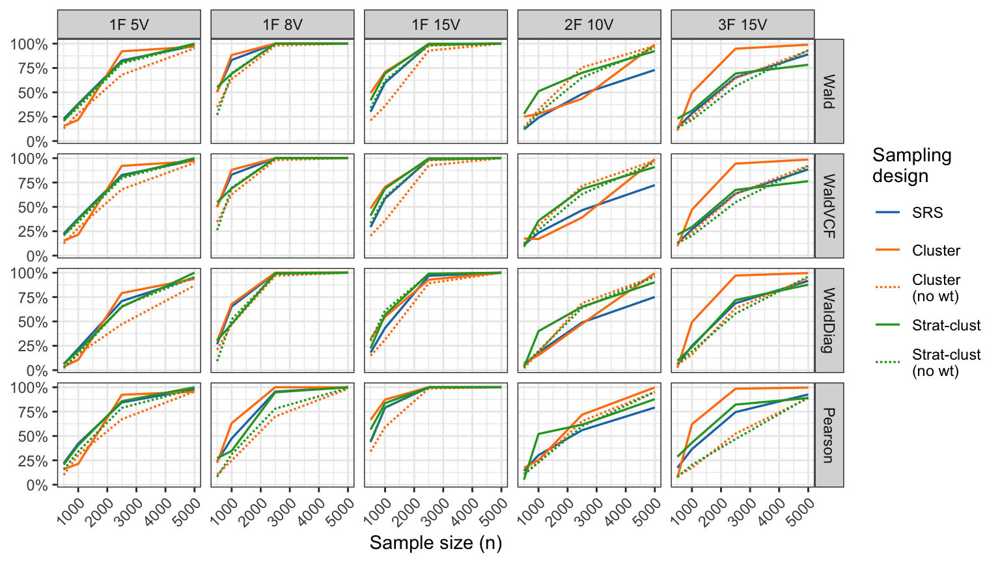

Weighted pairwise likelihood and limited information goodness-of-fit tests for binary factor models
Department of Statistics and Data Science Seminar, NUS
Haziq Jamil ![]()
Assistant Professor in Statistics, Universiti Brunei Darussalam
Visiting Fellow, London School of Economics and Political Science
October 18, 2024

London School of Economics and Political Science

London School of Economics and Political Science
Jamil, H., Moustaki, I., & Skinner, C. (2024). Pairwise likelihood estimation and limited information goodness-of-fit test statistics for binary factor analysis models under complex survey sampling. Br. J. Math. Stat. Psychol., In Press arXiv.2311.02543. URL:
https://haziqj.ml/plgof-nus/
Limited information goodness-of-fit (LIGOF)
Consider instead the fit of the lower order marginals.
Univariate: \(\ \dot\pi_i := \operatorname{P}(y_i = 1)\)
Bivariate: \(\ \dot\pi_{ij} := \operatorname{P}(y_i = 1, y_j=1)\)
Collectively \[ {\boldsymbol\pi}_2 = \begin{pmatrix} \dot{\boldsymbol\pi}_1 \\ \dot{\boldsymbol\pi}_2 \\ \end{pmatrix} = \begin{pmatrix} (\dot\pi_1, \dots, \dot\pi_p)^\top \\ \big(\dot\pi_{ij}\big)_{i<j} \\ \end{pmatrix} \] This is of dimensions \[ S=p + p(p-1)/2 \ll R. \]


Educational survey (results)
Power analysis


References

Agresti, Alan. 2012. Categorical Data Analysis. Vol. 792. John Wiley & Sons.
Asparouhov, Tihomir. 2005. “Sampling Weights in Latent Variable Modeling.” Structural Equation Modeling 12 (3): 411–34.
Bartholomew, David J, and Shing On Leung. 2002. “A Goodness of Fit Test for Sparse 2p Contingency Tables.” British Journal of Mathematical and Statistical Psychology 55 (1): 1–15.
Besag, Julian. 1974. “Spatial Interaction and the Statistical Analysis of Lattice Systems.” Journal of the Royal Statistical Society: Series B (Methodological) 36 (2): 192–225. https://doi.org/10.1111/j.2517-6161.1974.tb00999.x.
Cai, Li., Albert. Maydeu‐Olivares, Donna L. Coffman, and David. Thissen. 2006. “Limited‐information Goodness‐of‐fit Testing of Item Response Theory Models for Sparse 2 P Tables.” British Journal of Mathematical and Statistical Psychology 59 (1): 173–94. https://doi.org/10.1348/000711005X66419.
Chandler, Richard E., and Steven Bate. 2007. “Inference for Clustered Data Using the Independence Loglikelihood.” Biometrika 94 (1): 167–83. https://www.jstor.org/stable/20441361.
Cox, D. R., and N. Reid. 2004. “A Note on Pseudolikelihood Constructed from Marginal Densities.” Biometrika 91 (3): 729–37. https://www.jstor.org/stable/20441134.
Fuller, Wayne A. 2009. Introduction to Statistical Time Series. John Wiley & Sons.
Katsikatsou, Myrsini, Irini Moustaki, Fan Yang-Wallentin, and Karl G Jöreskog. 2012. “Pairwise Likelihood Estimation for Factor Analysis Models with Ordinal Data.” Computational Statistics & Data Analysis 56 (12): 4243–58.
Liang, Kung-Yee. 1987. “Extended Mantel-Haenszel Estimating Procedure for Multivariate Logistic Regression Models.” Biometrics 43 (2): 289–99. https://doi.org/10.2307/2531813.
Lindsay, Bruce G. 1988. “Composite Likelihood Methods.” In Contemporary Mathematics, edited by N. U. Prabhu, 80:221–39. Providence, Rhode Island: American Mathematical Society. https://doi.org/10.1090/conm/080/999014.
Lumley, Thomas. 2004. “Analysis of Complex Survey Samples.” Journal of Statistical Software 9 (April): 1–19. https://doi.org/10.18637/jss.v009.i08.
Mathai, Arakaparampil M, and Serge B Provost. 1992. Quadratic Forms in Random Variables: Theory and Applications. Dekker.
Maydeu-Olivares, Alberto, and Harry Joe. 2005. “Limited- and Full-Information Estimation and Goodness-of-Fit Testing in \(2^n\) Contingency Tables: A Unified Framework.” Journal of the American Statistical Association 100 (471): 1009–20.
———. 2008. “An Overview of Limited Information Goodness-of-Fit Testing in Multidimensional Contingency Tables.” New Trends in Psychometrics, 253–62.
Molenberghs, Geert, and Geert Verbeke. 2006. Models for Discrete Longitudinal Data. Nachdr. Springer Series in Statistics. New York, NY: Springer.
Muthén, Bengt O., and Albert Satorra. 1995. “Complex Sample Data in Structural Equation Modeling.” Sociological Methodology 25: 267–316. https://doi.org/10.2307/271070.
Reiser, Mark. 1996. “Analysis of Residuals for the Multionmial Item Response Model.” Psychometrika 61: 509–28.
Skinner, C. J. 1989. “Domain Means, Regression and Multivariate Analysis.” In Analysis of Complex Surveys, edited by C. J. Skinner, D. Holt, and T. M. F. Smith, 59–87. Wiley Series in Probability and Mathematical Statistics. Chichester; New York: Wiley.
Varin, Cristiano. 2008. “On Composite Marginal Likelihoods.” AStA Advances in Statistical Analysis 92 (1): 1–28. https://doi.org/10.1007/s10182-008-0060-7.
Varin, Cristiano, Nancy Reid, and David Firth. 2011. “An Overview of Composite Likelihood Methods.” Statistica Sinica, 5–42.
Wedderburn, R. W. M. 1974. “Quasi-Likelihood Functions, Generalized Linear Models, and the Gauss-Newton Method.” Biometrika 61 (3): 439–47. https://doi.org/10.2307/2334725.
Zhao, Y, and H. Joe. 2005. “Composite Likelihood Estimation in Multivariate Data Analysis.” Tha Canadian Journal of Statistics 33 (3): 335–56.